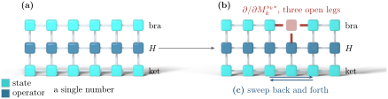
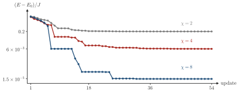

Page 10 of 12 of this session
7.10 The variational principle and DMRG for the ground state
How do we find the best MPS without searching a space of size \(2^L\)? We will now see that we can minimize the energy one tensor at a time, and that each step is a small eigenvalue problem. With these updates of one tensor the energy never goes up, and the sweep that they form is what is called DMRG.
\[C(s_1,s_2,\dots,s_L) \;\approx\; M^{s_1}_{1}\, M^{s_2}_{2}\, \cdots\, M^{s_L}_{L}, \tag{7.5}\]
This is the matrix product state of Section 7.4. Each \(M^{s_i}_i\) is a \(\chi\times \chi\) matrix for each value of the spin \(s_i\), and \(\chi\) is the bond dimension. These matrices are the variational parameters of this page.
An ansatz is only useful if we can optimize it. We take the MPS matrices \(\{M_i^{s_i}\}\) as variational parameters and minimize the Rayleigh quotient (7.11).
The energy of a state \(|\Psi\rangle\) is the Rayleigh quotient
\[E[\Psi] = \frac{\langle \Psi | H | \Psi \rangle}{\langle \Psi | \Psi \rangle}, \tag{7.11}\]
and \(E[\Psi]\ge E_0\) for every state, where \(E_0\) is the energy of the ground state. An update of one tensor that minimizes \(E\) over that tensor cannot raise \(E\), since the old tensor is one of the candidates. The two-site update, which changes two neighboring tensors at once and is the default of dmrgpy, truncates the bond after each step, so there \(E\) can go up a little.
In an equivalent way, we can introduce a Lagrange multiplier \(\lambda\) for the normalization and minimize \(\langle \Psi|H|\Psi\rangle - \lambda\left(\langle\Psi|\Psi\rangle - 1\right)\) with respect to every matrix in the network. In the diagrams, the derivative with respect to one tensor in the network, for example the matrix at site \(k\), corresponds to erasing that tensor from the diagram. The reason is that each tensor appears once in the bra layer and once in the ket layer, so with the other tensors fixed the energy is a quadratic form in that tensor, and it is linear in the bra copy alone. When we erase the bra tensor of site \(k\) from both the numerator and the denominator diagrams, what is left is a generalized eigenvalue problem for that single tensor, which becomes an ordinary one when the other tensors are chosen orthonormal. It involves an effective, reduced Hamiltonian that acts on the indices of site \(k\), and its ground eigenvector is the locally optimal replacement for \(M_k^{s_k}\). Figure 7.5 shows this erasure and the sweep that follows from it.
The steps From the Rayleigh quotient (7.11) to the local eigenvalue problem
We fix every tensor except the one of site \(k\), and we write that tensor as a vector \(A\), which has \(2\chi^2\) numbers at a bulk site of a spin-1/2 chain. The state is linear in \(A\),
\[|\Psi\rangle=\sum_j A_j\,|\phi_j\rangle,\]
where \(|\phi_j\rangle\) is the network with the tensor of site \(k\) replaced by the unit vector number \(j\). Then
\[\langle\Psi|H|\Psi\rangle=A^\dagger H_\text{eff}A,\qquad \langle\Psi|\Psi\rangle=A^\dagger N A,\]
with \((H_\text{eff})_{ij}=\langle\phi_i|H|\phi_j\rangle\) and \(N_{ij}=\langle\phi_i|\phi_j\rangle\), two matrices of size \(2\chi^2\times2\chi^2\). So the energy is
\[E=\frac{A^\dagger H_\text{eff}A}{A^\dagger NA}.\]
The simplest case is a tensor that is the whole state. Then the \(|\phi_j\rangle\) are the basis states, \(H_\text{eff}=H\) and \(N=1\), and what follows is the Schrödinger equation.
We take the derivative with respect to \(A^\dagger\), with \(A\) held fixed, and set it to zero,
\[\frac{H_\text{eff}A}{A^\dagger NA}-\frac{(A^\dagger H_\text{eff}A)\,NA}{(A^\dagger NA)^2}=0, \qquad\text{so}\qquad H_\text{eff}A=E\,NA.\]
This is the generalized eigenvalue problem of the text, and its lowest eigenvalue is the lowest energy that this tensor can give. When the tensors on the left of \(k\) and on the right of \(k\) are chosen orthonormal, the states \(|\phi_j\rangle\) are orthonormal, so \(N=1\) and the problem is the ordinary eigenvalue problem \(H_\text{eff}A=EA\). The old tensor is one of the vectors \(A\), so the new lowest energy is at most the old one.

This suggests an iterative algorithm. We fix every tensor except the one of site \(1\), solve the local eigenvalue problem there, and update \(M_1^{s_1}\) with the resulting eigenvector. Then we move to site \(2\), fix everything else, solve the local eigenvalue problem there, and update. We continue sweeping through the chain, site by site, until the energy stops decreasing. This sweeping procedure is the density matrix renormalization group (DMRG) algorithm. Its efficiency comes from the property of (7.11) that we used to build it. At every step we optimize only one matrix, which is a small linear-algebra problem. We never search for the ground state in the full exponentially large space at once. In a small chain we can follow the energy after every update, which is what Schematic 7.12 does.

DMRG minimizes the energy one tensor at a time,
\[E[\Psi]=\frac{\langle\Psi|H|\Psi\rangle}{\langle\Psi|\Psi\rangle}\ge E_0.\]
Each picture shows \(E\) after every update of three sweeps. The dashed line is the exact ground state energy \(E_0\). Which picture can come from DMRG?
Show the answers
- A. ✗ False
This is false. This curve was changed by hand at one update, where the energy goes up by \(1.5J\). In an update of one tensor the old tensor is one of the candidates of the local minimization, so \(E_\text{new}\le E_\text{old}\) at every step. The two-site update changes two tensors at once and truncates after each step, so its energy can go up, but on the open Heisenberg chain of 10 sites with \(\chi=4\) only by about \(10^{-4}J\).
The energy error after each update of a sweep never goes up, for three bond dimensions. - B. ✓ True
This is true. This is the sweep computed for an open Heisenberg chain of 10 sites with \(\chi=4\). The energy goes down or stays the same at every update, and after three sweeps it is \(6\times10^{-3}J\) above \(E_0\), which on this scale is on the line.
- C. ✗ False
This is false. This is the computed sweep shifted down by hand by \(0.5J\), so its last points are below \(E_0\). The Rayleigh quotient of every state is at least \(E_0\), so no sweep can cross the dashed line.
A one-site update works on a bulk site of a spin-1/2 chain. On how many numbers does its local eigenvalue problem act?
Show the answers
- A. ✓ True
This is true. The open legs of the erased tensor are two virtual bonds of dimension \(\chi\) and one physical index of dimension \(2\). The matrix acts on these \(2\chi^2\) numbers, and \(L\) does not appear.
- B. ✗ False
This is false. This is the exact diagonalization, which needs \(2^{40}\approx10^{12}\) numbers for \(L=40\). For \(\chi=100\) the local problem has only \(2\chi^2=2\times10^4\) numbers.
- C. ✗ False
This is false. This is the size at the end of the chain, where the tensor has one bond and one physical leg. At a bulk site there are two bonds, so for \(\chi=100\) the size is \(2\times10^4\) and not \(200\).
Show that \(E[\Psi]\ge E_0\) for every state, by writing \(|\Psi\rangle\) in the eigenstates \(|n\rangle\) of \(H\), with \(H|n\rangle=E_n|n\rangle\). Then take a system with two levels, \(E_0=-1\) and \(E_1=0\), and compute \(E[\Psi]\) for \(|\Psi\rangle=(|0\rangle+|1\rangle)/\sqrt2\).
Solution
We write \(|\Psi\rangle=\sum_nc_n|n\rangle\). The eigenstates are orthonormal, so \(\langle\Psi|\Psi\rangle=\sum_n|c_n|^2\) and \(\langle\Psi|H|\Psi\rangle=\sum_n|c_n|^2E_n\). Then
\[E[\Psi]-E_0=\frac{\sum_n|c_n|^2\,(E_n-E_0)}{\sum_n|c_n|^2}\ge0,\]
since every \(E_n-E_0\ge0\) and every \(|c_n|^2\ge0\). The equality holds only when \(c_n=0\) for every level above \(E_0\), meaning that \(|\Psi\rangle\) is a ground state.
For the two levels \(c_0=c_1=1/\sqrt2\), so \(E[\Psi]=\tfrac12(-1)+\tfrac12\cdot0=-0.5\), which is \(0.5\) above \(E_0\). The error of the energy is the weight of the excited levels times their energy above \(E_0\). For this reason a variational calculation gives the energy with a smaller error than the state, since an amplitude \(\delta\) in the excited level gives an error of order \(\delta^2\) in the energy.
Notebook check-in: session7.ipynb, “Low energy excitations of a Heisenberg model” (Core)
In this exercise you look at the matrix elements between the DMRG ground state and the first excited state of a Heisenberg chain. The excited state is what the sweeping procedure of Section 7.10 finds one level above the state that minimizes (7.11).
Try it. Plot the matrix element between the ground state and the first excited state along the chain, for L=20 and for L=12. Is the excitation localized on a few sites or spread over the chain? Then set Bz=0 and see whether the profile changes.